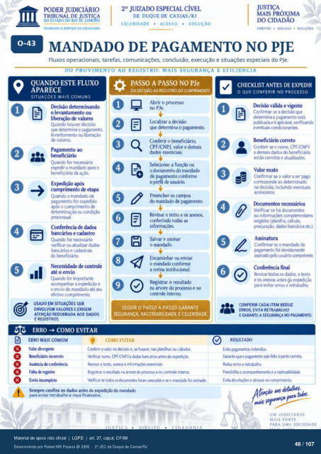

Transcrição automática em português, ainda não revisada. Confira grafia, prazos e termos jurídicos na imagem e no PDF antes de utilizar.
TRIBUNAL DE
ESTADO DO RIO JANE O
TRABALHO A SERVIÇO DA CIDADANIA
DE DUQUE DE CAXIAS/RJ
CELERIDADE • ACESSO • SOLUÇÃO
DIREITOS • DIALOGO • SOLUÇÕES
MANDADO DE PAGAMENTO NO PJE
Fluxos operacionais. tarefas, comunicações. conclusão, execução e situações especiais do PJe.
DO PROVIMEVIO AO REGIS'IM): MAIS SEGURANÇA E EFICIENCIA
QUANDO ESTE FLUXO
APARECE
SITUACÔES MAIS COMUNS
o levantarnento ou litr•ração de valores
Quando houver decisão que determine 0 paganHt0.
levantamento ou de valores.
Pagamento ao Quando for necessário
ex*dir o mandado o tmeficiário da ação.
cumprimento de etapa Quando 0 mandado de
pagamento for exFdid0 avós o cumprimento de
determinação ou condição Conferência de
Quando fM verificar ou atualizu dados
bancários e do tmeficiário.
Necessidade de controle até o envio
Quand) for irnrwtante acompanhar a exrHiiçào e
o envio mandado até efetivo cumprimento
EM SITUAÇÕES QUE
ENVOLVEM VALORES E EXIGEM
ATENÇÃO REDOBRADA AOS DADOS
E REGISTROS.
ERRO -+ COMO EVITAR
e
PASSO A PASSO NO PJe
DA DECISÃO AO REGISTRO CUMPRIMENTO
-o Abrir o prcxesso
no PJe. 1.0izar a decisão
que determina o pgarnento. Conferir o beneficiário,
CPF/CNPJ, valor e demais dados essenciais.
o dcxumento do mandado de pagamento conforme
o perfil usuário. Preencher os camps
do mandado de pagamento. Revisar o texto e anexos.
as Salvar e assinar
o mandd). Encaminhar ou enviar
o marufado conforme a rotina institucional.
Registrar o resultado na árvore do prtxesso e no
controle interno.
SEGUIR O PASSO A PASSO GARANTE
SEGURANÇA. RASTREABILIDADE E CELERIDADE.
ERRO MAIS COMUM
O diverw•te e
Envb irr«npleb
-e: COMO EVITAR
Cafeir 0 v" e. ou cáktbs. CPF/CNPJ e dxks barrários nes da
Re.•isar o texto, e Registrx 0 resutú na prxeSso e r» cmtr& interm
V«fKar tdh f«am e o rnarúb assirú Sempre confira os dadcs antes da exFdiçio do rnarúb
evitar retrabalho e risco
CHECKLIST ANTES DE EXPEDIR
O QUE CONFERIR NO PROCESSO
D«isão válida e vigente Confirmar se a decisão que
determina o pagamento está publicada e é aphcàvel, verificando
eventuais cmdicionantes. correto
Conferir se o norne, CPF/CNPJ e &mais dados t»neficiárb
estão corretos e atualizados Valor exato
Cmfirmar se o valor a ser pago ao determinado
na irrluindo eventuais Document(S
Verificar se há dcxurnentos ou compk•rnentues
exigidos (planilha, cálculo, banúios etc.).
Assinatura Confirmar se o mandado de
foi devidaÑMte asinú usuü
Conferência final Revisar ttxlos os dados. o texto
e cs anexos antes 4a para evitar erros e retrabalho.
CONFERIR CADA ITEM REDUZ
ERROS, EVITA RETRABALHO
E GARANTE A SEGURANÇA PAGANENTC).
RESULTADO
Evia txlevuos. G&ante o paganwito feito à pute arreta
Rdz erros e retrEho Evita e cumpriTMto.
UM JUDICIÁRIO
MAIS FORTE
PARA UMA SOCIEDADE
Ver também o infográfico original (página 48)
